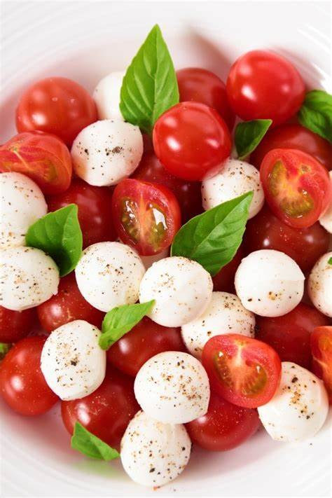

¿CÓMO PREPARAR UN MENÚ SALUDABLE?
Nuestro menu de hoy constará de dos platos y un postre, todos muy rápidos y sencillos de hacer, además de sanos
MENÚ
- Ensalada capresse
- Salmón con verduras
- Coulant

ENSALADA DE TOMATE Y MOZZARELLA
Para comenzar, haremos una ensalada rica y con poco ingredientes

INGREDIENTES
- Tomates cherrys
- Mozzarella
- Albahaca
- Aceite de oliva
- Sal
- Vinagre
PREPARACIÓN
- Lavamos y cortamos el tomate
- Cortamos la mozzarella
- Añadimos la albahaca, previamente lavada
- Aliñamos al gusto con aceite, sal y vinagre
SALMÓN AL VAPOR CON ENSALADA DE JUDÍAS
A continuación, explicaremos el paso a paso para hacer un salmón al vapor, muy sencillo, rápido y sano

INGREDIENTES
- Judías verdes
- Zanahorias
- Patatas
- Cebolla
- Salmón
- Salsa de soja
- Aceite de oliva virgen
- Jengibre molido
- Pimienta negra molida
- Sal
PREPARACIÓN
- Mesclamos todos los ingredientes del aliño, en un recipiente y reservamos
- Preparamos las verduras, lavamos bien las judías y las cortamos, pelamos y troceamos las zanahorias y hacemos lo mismo con las patatas
- Colocamos los lomos de salmón en una vaporera
- En una olla, calentamos agua con sal, cuando empiece a hervir añadimos laa verduras y las cocemos durante 15 minutos
- Pasado el tiempo de cocción, escurrimos las verduras y las mezclamos con el aliño
- Emplatamos con el lomo de salmón
COULANT DE CHOCOLATE CON HELADO
Para hacer nuestro tercer y último plato haremos un coulant, sin úsar azúcar para hacerlo lo más sano posible
INGREDIENTES
- 1 plátano
- 1 huevo
- 2 cucharadas de cacao sin azúcar
- 3 cucharadas de harina de avena
PREPARACIÓN
- Pelamos el plátano, lo ponemos en un bol y lo machacamos con un tenedor hasta que forme una masa perfecta
- Añadimos el huevo y mezclamos para que se incorpore bien
- Juntamos el cacao y la harina de avena en otro bol
- Incorporamos los ingredientes secos a la mezcla de plátano, poco a poco, hasta obtener una mezcla homogenea
- Por último, solo necesitaremos poner el recipiente con la masa en el microondas durante 2 minutos y estará listo para servir.